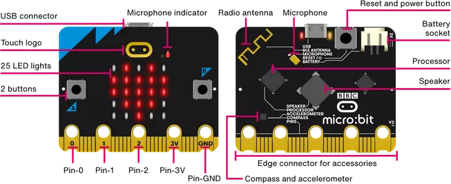

1
Hardware aufbauen
Sammle alle Bauteile und baue das Auto zusammen.
📦 Bauteilliste — hake ab was du hast
0 / 6
🔌 Schaltplan — so werden die Servos verbunden
micro:bit (Auto)
P1
Signal Servo links
P2
Signal Servo rechts
V (5V)
Stromversorgung
GND
Masse
Servo links
Orange
Signal → P1
Rot
Strom → V
Braun
Masse → GND
Servo rechts
Orange
Signal → P2
Rot
Strom → V
Braun
Masse → GND
📍 Pin-Position am micro:bit (unten am Gerät)

🛠️ Schritt-für-Schritt Aufbau
micro:bit einstecken: Stecke das Auto-micro:bit in das
Das zweite micro:bit ist die Fernbedienung — es braucht keine Kabel!
Breakout-Board.Das zweite micro:bit ist die Fernbedienung — es braucht keine Kabel!
Linker Servo: Stecker auf die Pin-Reihe
Rot kommt automatisch auf V (Strom), Braun auf GND (Masse).
P1 — oranges Kabel auf den gelben Signal-Pin.Rot kommt automatisch auf V (Strom), Braun auf GND (Masse).
Rechter Servo: Stecker genauso auf die Pin-Reihe
Wieder: Orange auf Signal, Rot auf V, Braun auf GND.
P2.Wieder: Orange auf Signal, Rot auf V, Braun auf GND.
Spannung einstellen: Setze die grüne Brücke
Ohne diese Brücke bekommen die Servos keinen Strom!
V1 auf 5V (unten rechts am Breakout-Board).Ohne diese Brücke bekommen die Servos keinen Strom!
Auto montieren: Befestige Servos, Räder und micro:bit am Chassis.
Die beiden Servos zeigen nach links und rechts — sie sind gespiegelt eingebaut.
Die beiden Servos zeigen nach links und rechts — sie sind gespiegelt eingebaut.
2
Programmieren
Du schreibst zwei Programme — eins pro micro:bit.
Das Besondere am MicroCar: Du brauchst zwei Programme. Die Fernbedienung sendet Befehle über Funk, das Auto empfängt sie und steuert die Servos. Eine Extension brauchst du nicht — alle Blöcke sind schon in MakeCode drin.
📡 Programm 1 — Fernbedienung
1
Funkgruppe einstellen
Erstelle ein neues Projekt
Fernbedienung. Ziehe in den „beim Start"-Block den Block „setze Gruppe auf 1" aus der Kategorie Funk. Nur micro:bits mit derselben Gruppe können sich hören!
2
Befehle senden
Hole dir dreimal den Block „wenn Knopf ... gedrückt" aus Eingabe und lege jeweils „sende Zeichenkette über Funk" hinein: Knopf A sendet
vor, Knopf B sendet zurück, Knöpfe A+B senden stopp.
3
Auf das erste micro:bit übertragen
Lade das Programm herunter und übertrage es auf das micro:bit ohne Kabel und Servos — das ist ab jetzt deine Fernbedienung.
🏎️ Programm 2 — Auto
4
Gleiche Funkgruppe
Erstelle ein zweites Projekt
Auto. Auch hier: „beim Start" → „setze Gruppe auf 1". Dieselbe Zahl wie bei der Fernbedienung!
5
Befehle empfangen
Ziehe den Block „wenn Text empfangen über Funk (empfangeneNachricht)" aus Funk auf die Fläche. Baue darin mit „wenn / dann / sonst wenn" aus Logik drei Vergleiche: Ist
empfangeneNachricht gleich vor, zurück oder stopp?
6
Servos ansteuern
Bei
vor: „setze Servo P1 auf 180°" und „setze Servo P2 auf 0°". Bei zurück: genau umgekehrt — P1 auf 0°, P2 auf 180°. Die Servos sind gespiegelt eingebaut, deshalb brauchen sie entgegengesetzte Werte!
7
Stopp einbauen
Bei
stopp: „stoppe Servo P1" und „stoppe Servo P2". Übertrage das Programm auf das Auto-micro:bit — und dann: Testfahrt! 🏁
MakeCode Editor öffnen
In MakeCode öffnen
Denk daran: Du brauchst zwei getrennte Projekte — „Fernbedienung" und „Auto"!
- Nichts kommt an? Beide micro:bits müssen exakt dieselbe Funkgruppe (1) haben — prüfe beide „beim Start"-Blöcke.
- Servos drehen sich nicht? Die grüne Brücke V1 auf 5V am Breakout-Board prüfen.
- Auto dreht sich im Kreis statt zu fahren? Ein Servo hat die falschen Werte — bei „vor" braucht P1 180° und P2 0°, weil die Motoren gespiegelt eingebaut sind.
- Auto fährt rückwärts statt vorwärts? Tausche einfach die Werte 180 und 0 in beiden Befehlen.
- Die Servo-Blöcke findest du unter Fortgeschritten → Pins → Servo.
⚠️
Versuche es zuerst selbst — die Lösung ist nur zur Kontrolle!
Programm 1 — Fernbedienung
beim Start
setze Gruppe auf 1
wenn Knopf A gedrückt
sende Zeichenkette "vor" über Funk
wenn Knopf B gedrückt
sende Zeichenkette "zurück" über Funk
wenn Knopf A+B gedrückt
sende Zeichenkette "stopp" über Funk
Programm 2 — Auto
beim Start
setze Gruppe auf 1
wenn Text empfangen über Funk (empfangeneNachricht)
wenn empfangeneNachricht = "vor" dann
setze Servo P1 auf 180°
setze Servo P2 auf 0°
sonst wenn empfangeneNachricht = "zurück" dann
setze Servo P1 auf 0°
setze Servo P2 auf 180°
sonst wenn empfangeneNachricht = "stopp" dann
stoppe Servo P1
stoppe Servo P2
✨ Erweiterung: Steuere das Auto mit dem Neigungssensor — kippe die Fernbedienung nach vorne zum Fahren! Oder baue eine Hupe mit dem Lautsprecher ein.
✅ Ich habe …
0 / 5